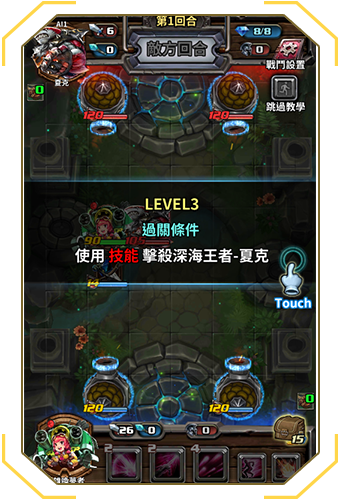
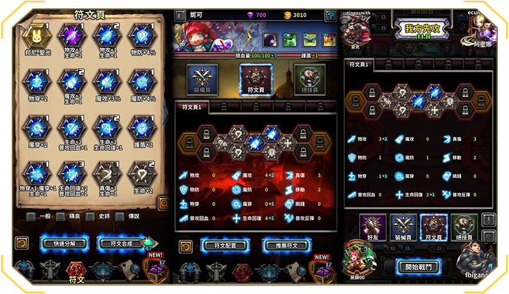

-
當人類的意識進入「亞爾薩」後，部分喚夢者開始操弄商富人士，在各地組成一個又一個商邦。為了拓展勢力，眾多商邦合併成為「亞爾薩」最大財團「起源商社」，運用手中的資源財富影響、操控，甚至推翻一些貧窮或發展中國家。
起源商社興起後開始致力於發展科技武器，零式武裝開發局由此而生。商社的科學家投入相當龐大的人力在研究機械學，試圖將機器人運用在軍事上，他們為艾蜜製造出究極的裝甲-43S人體裝甲後，武裝開發局決定更大膽的突破現有科技技術。經過1年的時間，研發出了第一台純機械戰鬥兵器──「瓦特」。
經過廣泛的測試，瓦特的邏輯運算、分析目標、即時戰略，堪比人類精英的高智能水平，測試成果讓開發局堅信他們在魔法機械領域的研發實力，並對這次的成功興喜若狂，隨即推出新機種「EVA-C」並進行量產，然而，「EVA-C」的表現遠遠不如瓦特，這樣的差異讓武裝開發局百思不得其解。
瓦特的表現受到更嚴密的監督，科學家們想知道他與其他機種究竟有什麼不同之處，但仍然沒有結論。擔心瓦特會擁有自己的意識，武裝開發局決定無限期關閉瓦特，並以此為研究方向。
關機後，瓦特經常隔日出現在不同位置，但沒有人知道究竟是誰移動了瓦特，直到某個深夜，布朗基經過實驗室，他看見瓦特正在實驗室觸碰他的研究器材，便猜測瓦特漸漸有了意識……
有人說是布朗基將瓦特改造成有意識的機器，有人認為瓦特自己將開機鈕打開。但事實上是一名喚夢者進入瓦特，這也是第一次，人類用意志力成功控制非生命體。
一日，瓦特被布朗基所設置的監視器拍到，他用實驗室的器具對自己進行修改升級。雖然保持沉默，但是布朗基現在確定這魔法巨兵已經擁有了自我意識。
-
守衛者尼爾被視為騎士團中不可或缺的戰力。無論在力量、技能、判斷力和勇氣的表現中，尼爾已然是國家的驕傲。然而在成為守衛者之前，尼爾只是一名普通的「王家守衛」成員。
在人類的意識把大地染紅後，安迪莎皇貴將「王家守衛」重新命名為「秩序守衛」，並且將之納為聯盟的主要戰力。
在著名的聖．亞恩突襲戰中，聯盟軍被起源商社包圍，陞達斯皇室成為起源軍的目標。尼爾的戰友一個接一個在刀光劍影中倒下──除了尼爾。他似乎獲得了一股不知名的力量，並藉此保護了皇室成員，像是被神祝福般，將敵人的攻擊一一擋下。
援軍已至，當要援救被逼至死角的皇室成員時，他們發現敵軍的屍體堆那，一名騎士獨立其上。即使氣色黯淡，尼爾仍堅守著身為皇家騎士的榮耀。在昆古和亞恩兵部的幫助下，尼爾整合了剩下的軍力，不僅打敗了入侵的部隊，更在幾日內俘虜了對方的所有指揮官。
正義之劍的故事被廣為流傳，「鐵山之戰」暴發時，尼爾更率領秩序聯盟的軍隊相救，重傷了當時在戰場上叱吒風雲的商社戰士「亞瑟──黨捷恩」，不但化解了危機，也將敵軍逼退至霧影森林。「伊凡洛斯」國王──金匠為表感謝，命國內技術最好的冶鐵師鍛造鐵山國極其精緻的劍贈與尼爾，也促使兩國簽訂了互助盟約。尼爾為了回敬豪邁的「伊凡洛斯」國，將此劍命名為「伊凡洛斯」。此舉更使他聲名大噪。
尼爾：「伊凡洛斯出的伊凡洛斯，揮舞著兩國的正義。」
-
創世之初，混沌之神海蛇阿佩普與奧力天神為了海與河的統治權大戰。戰鬥持續千年，最後，阿佩普獲勝並霸占了整個海洋與滋養萬物的起源之河。
阿佩普後來生了兩個兒子，並且分別給予統管河與海的權力。
在阿佩普過世的幾個世紀之後，一群擁有強大法力的術士齊聚，他們施展了一個難以破除的禁錮術，將河、海中的兩隻怪獸束縛於水中。施法者將相關的文獻全數刪除，因此沒有人知道這兩隻半神獸的下落，也永遠不知道如何釋放他們。
時過境遷，特提斯汪洋被喻為死亡與富饒的水域。傳說許多船隊無故消失於此，也有人說歷時數百年後有海盜乘載滿是黃金的船隻返回岸上，特提斯海洋一直是充滿冒險與傳說的神秘領域。
其中一個最廣為人知的故事就是「阿佩普的後代是特提斯的看守者」。去而復返的生存者稱之為「夏克」。傳說這名神獸一次打擊可以讓一艘船立刻翻覆沉沒。
一日，一股神秘的力量解開了夏克的枷鎖，隨著越來越多的冒險者抵達特提斯汪洋邊界，夏克也變得越來越煩躁。這些像是被附身的冒險家完全不知道深海的危險，不斷蜂擁於夏克所在的海洋中。終於他決定終止這些愚蠢人類的叨擾，最好的辦法便是到陸地上剷除根源。
夏克準備前往中央地區徹底破壞他們，並喚醒他沉睡的弟弟──「霍頓」。
-
在世佡蘿森林流傳著一個巨大生物襲擊人的謠言，商人是其主要襲擊對象。雖然這個生物巨大魁梧但速度極快，而且只對收集食物和生活用品有興趣。
一位喚夢者好奇地追踪著當地野獸的傳言。找到後發現──這個生物竟然是一個無人能操控的巨魔，而且就居住於附近洞穴中。他觀察到巨魔的動作似乎很緩慢，不如傳聞中的迅速。此外，他發現這巨魔正在養育一個幼小的嬰兒。
為了瞭解事情的真相，喚夢者入侵小女孩的思想。驚奇的是，她可以像是控制女孩身體的行動那般輕鬆的控制巨魔的行動。巨魔對著一個瓶子垂涎，向女孩伸手央求。喚夢者下意識的給巨魔喝了一滴這怪異的液體，神奇的是，接下來巨魔開始能以高速移動。
喚夢者進入小女孩心靈深處探索著。她到底何方神聖？女孩怎麼出現在山洞裡？喚夢者看到小孩的母親把孩子放在山洞裡的遙遠記憶。「親愛的寶貝女兒，我們女巫族一世紀一次在彌德亞聚集的時間到了。我不在的這段時間，我已經吩咐恰克悉心照顧你。」這個記憶大約有一個月大的時間。
當喚夢者抽離小女孩的意識，他覺得他已經看到足夠的資訊，此時，巨魔突然出現在他身後，以人類的口吻對他說，「你知道的太多了……」這名冒險家就此消失於亞爾薩。
-
蕾娜，鐵山王的侄女，傳奇鐵師偉恩的女兒。
蕾娜自小在伊凡洛斯王國裡過著舒適的生活──直到她27歲生日那天，人生遭逢巨變。
偉恩在鐵山國「伊凡洛斯」中是極俱聲望的貴族，更是國王金匠的弟弟，人人稱頌他為「伊凡洛斯的王冠」。起源商社聞此人便欲收納旗下，但耿直忠心的他拒絕了邀約。從盟源戰爭開始時，商社持續傳遞想與鐵山國結盟的意願，但都被拒之門外，商社高層決定剷除偉恩，予以警告。在為她父親收集原料的同時，伊凡洛斯的市中心發生了一場驚天的爆炸。蕾娜立刻趕往位於市中心的工作室，卻只見父親已被炸碎的石頭與瓦礫掩埋。蕾娜淚如泉湧，她瘋狂地試圖拯救她父親，卻只在殘骸中找到一個精緻的盾牌，上頭刻著「親愛的女兒，生日快樂」。
蕾娜緊握盾牌衝往伊凡洛斯的高城，踏上高聳的陡梯，她在灰燼和霧霾的包裹中向國王的寶座獨行。當大禮堂的雕花銅門敞開，霎時間，靜謐無聲取代了原先充斥大堂的喧嘩爭吵。
「親愛的侄女，是誰做了這件事？我弟在哪裡？」王座上的人影起身激動的吶喊。
蕾娜嚴肅答道：「父親已經喪命，我不知道主使者是誰。」國王頹然坐倒，緊蹙的眉頭訴說哀傷。
「他們殺了妳父親，殺了我弟弟，偷了『伊凡洛斯的王冠』……」他眼中的悲痛隨著話語落下陡然轉為憤怒，他緊握拳頭砸向王座。「偉恩的女兒蕾娜，伊凡諾斯王座第十代繼承人，今後，封妳為『戰爭女神』。妳的第一個任務是找到兇手，並將這些惡魔繩之以法！戰爭女神，告訴我，依據鐵山法令，謀殺及偷竊應如何處分？」蕾娜向國王行以戰士的禮儀，並道：「犯此罪之人，應受77次的死亡印記。」
「戰爭女神！本王在此命妳將這些記號烙印在鐵王國的所有敵人身上！」
-
「伊凡洛斯」又名鐵山國。傳說從世界誕生之日，大地的工匠「天神奧力」，打造了亞爾薩世界的山、水、陸地、丘陵和山川。在與混沌之神交戰後，祂在鐵礦山打造了一座城，名之為「伊凡洛斯」，這就是鐵山國的由來。
而傳說矮人王‧金匠家族就是繼承奧力血脈的傳承者。
矮人是工藝和用鐵的箇中翹楚，他們善於利用山脈中豐富的寶石、鐵礦和金屬類資源，藉此打造精美的飾品和戰爭利器，並長年倚靠貿易賺取龐大的財富。
喚夢者進入這世界後，起源商社第0武裝開發成立積極發展機械兵器，因金屬類原料大量缺乏，而開始打鐵山國豐富礦產的主意，並用盡各種威逼利誘手段。
起初金匠不打算介入聯盟與聯邦之間的戰爭，但是起源商社在幾次邀約失敗後雇請了殺手集團弒殺了金匠的弟弟偉恩。失去弟弟的他立刻對聯邦宣戰，並和秩序聯盟在軍事上進行聯合行動。
-
在TNI的夢境實驗後，一名極受壓抑的醫生喚夢者，進入這世界後就把他的憤恨及意識附在一名科學家身上。天才科學家布朗基在他的影響下性格日趨急躁且力求完美，這樣的性格加上過人的智慧造就了他在科學上極大的成就。
他本是起源商社的第0武裝開發局中的主要分子，在布朗基及他的夥伴的帶領下他們創造出頂尖的機械科技技術，但在布朗基受影響的那日，他突然離開自己所負責的研發團隊，並致力於火藥及炸彈的研究。他將自己關在實驗室裡，翻閱了許久前被局長「杜林」遺棄的安朵炸彈實驗計畫，又藉著喚夢者對人類元素的知識，成功在這世界找到類似黑索金的材料，以此研發出了新式攜帶型炸彈，命名為「安朵９號」。這種新式炸彈穩定度高，火力較以往兵器更加強大。
商社部隊在戰場上使用此項發明，得到了亮眼的成果。起源商社重新啟動「安朵研發計畫」並從開發局中成立安朵實驗室，如今布朗基為負責人，不時這位「爆破大師」也會親臨戰場測試他創造的──新玩具。
-
喚夢者介入亞爾薩之後，這世界漸漸形成眾多陣營及組織──本來就存在的鐵山國伊凡洛斯、法師城彌德亞、精靈國以佛倫等，還有許多尚未被喚夢者發現的地方。其後建立的毒糖果殺手家族、黑幫組織死期黨、活動於特提斯群島的眾數海賊團、罪惡逃城掃羅市、以軍國主義著名的費洛恩、及大地中最大的兩幫勢力秩序聯盟及起源商社。爾後發生了以下大型戰爭：七次盟邦戰爭、一次鐵山國之戰、費商黑森林之役、兩次盟彌之戰及兩次盟費之戰及許多大大小小戰役。在諸多戰爭發生後，各國的喚夢者紛紛找尋更多不同勢力加入他們所影響的陣營。
阿尼斯曾是一個普通農民，靠養豬養牛維生，是個平凡無奇的簡單人物──這一切在他被一股強烈的意識控制後大大改變。這意識驅使他向北方火山島移居。除了他本人以外，沒有人知道阿尼斯其實是一支傳承許久的古老獸人法師的後裔，被稱為「艾斯凡恩」火術派。阿尼斯自消失後，幾年來一直在火山島裡狂熱地操練祖先的法術。
遵循先人留給他的遺產，阿尼斯在一座山洞內找到並揭開了傳說中的起源之火，這是一個只有在書中紀載的古代神器，它能夠給予使用者毀滅性的火源之力。
因著古代神器及充分操練祖先魔法後，阿尼斯回到「彌德亞」，並向所有其他「艾斯凡恩法」及其他門派的法師揭開自己的身分。有著強勁的實力與火術派血統，阿尼斯成為「艾斯凡恩」祭司的領導者，也被推舉為「彌德亞」大法師公會的成員。
一日，阿尼斯在冥想，他突然清楚的看見異象──一群來自另一個世界的人類到了亞爾薩的世界，是他們造成了勢力與勢力之間的衝突。爾後，他又看到一個他無法理解的景象：在一個白色的房間，充滿了他從未見過的科技，機器上面印著三個大字母：TNI。
-
亨德里，一個拒絕與商社同流合汙的正派貿易商。自起源商社與許多原本與之貿易的國家斷絕後，他們便禁止非社員的商隊在這些區域貿易。
被逐出據點的亨德里帶著妻小定居魔法之城彌德亞。這個充滿巫師、法師和術士的聖城成為了亨德里和他的家人的歸屬，他的女兒阿密娜特別喜歡這奇幻城市。隨著年紀的增長，阿密娜對魔法的興趣與日俱增──特別是月之力領域的魔法。
興趣使然，她在「彌德亞學院」月宮系的成就超越了所有學生。她很快便掌握了這類法術的不同技能，成為這個領域的高手。阿密娜受到其他魔法學校的高度認可，並且爭相向她遞出入學邀請。幾經思量後，她選擇了聯盟內的秩序學院──他們擁有世界上最大的法書圖書館。
阿密娜不僅勤於學習新的法術知識，她更喜歡實際運用並且更新她的學藝。她決定參加聯盟舉辦的「夢幻破碎者魔法士錦標賽」。這個看似光明磊落的比賽，實際上卻有著不為人知的陰暗面，許多學生與頗負名望的術士會利用比賽的包裝，私下勾結以獲取名利、財富。但是這次，阿密娜輕鬆獲勝；其他業餘魔術師似的參賽者與矯捷之月相比都相形失色。
而黑幕掀開後，所有共謀的法師及學生都遭受到應有的懲處。當管理者從校園宿舍拖出犯案人員時，這些人卻大聲的喊道，他們是無辜的，他們是被一股力量操控的。
阿密娜持續且緊密的與秩序聯盟合作，直到現在，她已完全掌握月光之力的能力，成為聯盟與魔法城的重要橋梁。
-
聯邦軍428旅 軍號2181324 軍旅日誌
12/4：我軍敗於鐵山國之戰，本來順利的圍剿行動被敵方友軍沖散，他們何時與聯盟搭上線的？我方完全不知情……我們占領的四座山一一被攻破，率領聯盟軍的尼爾已經帶著殘餘的鐵山軍擊潰了亞瑟將軍及其部隊，主帥身負重傷，正搶先被運送回此地。
12/5：我們接收了受傷的將軍，看到被稱為戰場死神的亞瑟將軍面目全非近乎毀容，我很震撼，萬萬沒想到連他也會有如此下場。下午14:17將軍已折，參謀令我們放棄在倚釘山嶺的最後據點，前往彌德亞，幹部及將軍的屍體將優先撤離，我屬的724旅負責斷後。估計雙方距離約兩天，倘若聯盟軍速度快，我們還可以拖延一陣。
12/7：經過兩天，我們所準備的食物匱乏了，因當時撤離的太倉促，連保暖的衣物都沒帶上幾件。部隊中已經不少人發燒生病，甚至有兩人凍死，看來我們必須盡快趕往彌德亞。
12/8：彌德亞近在眼前只差幾公里，此時見遠處我方所有部隊往我們的方向前來。本以為他們會拿物資過來，沒想到他們卻將最後一絲生機斬斷。彌德亞不接收我們，說是他們不參與商社與聯盟的戰爭，只有參謀及少數幾個幹部受到政治庇護。我們所剩的部隊決定進入霧影森林，在那打叢林戰我們才有勝算。
12/9：昨日入林安營，偵察兵已經看到聯盟的軍隊在森林外圍，我們所剩的部隊不多，決定再往更深層的地方前進。奇怪的是，聯盟軍其實早就可以進入森林探索，應該是怕被我們伏擊。到晚上聯盟軍仍然未有動靜，看來終於有一晚可以休息了。
12/10：凌晨02:05我站岡，軍營周圍彌漫著似紅似黑的霧，周遭充滿各種詭異聲響。我告訴自己別嚇自己，正當我緩住情緒時，營火突然熄滅，我感覺到許多影子在樹叢間呼嘯呼嘯的發出聲音。然後……突然一陣安靜，下一秒成千上萬好像蝙蝠的生物開始攻擊我方駐紮的士兵……
同日12/10 14:26：我軍本來尚餘約4000人，一夜之間全滅。它們不是鐵山軍也不是聯盟……是不是人幹的我都不知道……我的右腳被昨晚的生物咬傷，腫的幾乎不能走路。我的眼睛好像也因著這那棟物的毒液漸漸的看不見全身是血，腳上的傷口留著濃，但我奮力的繼續逃，這時一位苗條的身影出現在我面前，她好美，猶如童話般的奇物。她浮在空中很溫柔的說：人類阿，人類。你不該進來的，不過看你努力掙扎的樣子，我就跟你玩個遊戲，日落之前如果你離開我的森林，我就放了你。
同日12/10 17:47：我從我快瞎掉的雙眼看見天色的黯然，看來這森林是出不去了，我感覺到四處蠢蠢欲動的聲音愈來愈大聲，如果有人撿到這本日記，請你不要待在這座森林裡，若你來得及離開，幫我告訴住在天水村的妻子「怡靜」我很愛她，請她好好照顧自己，還有我們未出生的孩子「光言」，好好讀書將來當醫生，別去加入什麼該死的商社軍。
現在，「她」在腦中對我說：這位客人，我叫貝拉，然後你時間到囉……
-
卓爾本來是一位來自彌德亞的精靈法師，儘管精靈以歌頌及保衛生命聞名於世，他卻對法師最為禁忌的亡靈魔法抱持著莫大的狂熱。然而其父為精靈族甚至整個亞爾薩大陸的善道人士，在彌德亞又有些許威望，因著父親的財富和權力，使得許多人對這年輕法師睜一隻眼閉一隻眼，沒有極大的反彈。卓爾本身在眾人監視且忌諱的眼光下，最多是研讀些禁書，或是拿昆蟲、豬、羊等牲畜做練習或實驗。
直到一日，一名喚夢者激化了他對亡靈魔法的渴望，他補獲更多動物甚至綁架一名商人做為實驗對象。整個法師城為之震撼，該事件嚴重到彌德亞最高執政「大法師公會」親自出面處理，公會一致同意流放卓爾至絕境沙漠，永不得踏入彌德亞城。流亡在荒漠，走投無路的卓爾往他唯一可以去的地方費洛恩前進，希冀投靠費洛恩。
他穿過沙塵暴，走進這獨裁大國的城牆中。如他預期，費洛恩議事廳及總理非常願意提供資源支持他的禁忌實驗。
卓爾在完全掌控死靈術後，議事廳封他為參將，並且協助製造震撼世界的亡靈軍團，費洛恩因此有了足夠的實力威脅亞爾薩兩大勢力。原本欲侵占費國的起源商社轉而與之同盟，秩序聯盟則是在鄰近費洛恩的地界加派軍力及重建防禦設施。如今，卓爾仍致力於死靈法術，經常出入戰場收集可以完成他傑作的「材料」。
-
「彌德亞」是一座奇幻城，有著各派系的法學士、術士、巫師、教導或學習魔法的人，城中也飼養了許多魔法生物。
妮可的父母是城中最負盛名的魔法寵物店主，妮可就在每天陪伴照顧各種奇獸的環境下長大。
彌商戰爭停火後，大法師公會的兩名簽約代表出發不久便在途中被一群不明的專業人士襲擊，使臣團被襲擊的消息一傳回立刻向上呈報。大法師公會派出「彌德親衛隊」保護使臣團，然而，公會中親盟派人士不樂見此次戰役就此協商，以提高國內對起源商社的仇恨，私底下傳密旨給他們佈署好的人，故意拖延德親衛隊出城增援的時間。
妮可家的寵物店位於城門口，她看見城門的官兵百般刁難親衛隊，立刻騎著她最愛的寵物「嘴嘴」往城外衝去，成功迎救兩名代表，在喚夢者的影響下大法師公會非常感激這名勇敢的小鬥士並頒發親衛隊徽章於她。
如今，妮可及嘴王守衛著這世界最奇幻的城市「彌德亞」。
-
喚夢者進入亞爾薩的世界後漸漸形成了許多勢力，其中最大的兩個陣營－秩序聯盟及起源商社相互發起了這世界最大規模的戰爭。
秩序聯盟大都是由各地名望人士及眾多經濟較寬裕的貴族國家組成，其中以安迪莎皇貴、陞達斯王族、凱威爾王族及青勇世家為主要推動的勢力。世代相傳著獨門長槍術的青勇世家領養了一個因戰火失去雙親的孤兒，他的養父母將其命名為昆古。在長輩眼中，昆古被視為家族的一份子，他們將青勇世代傳承的戰鬥武藝教導之，而昆古也運用大部分時間努力的操練和學習。然而，家族中的平輩們卻不承認他，甚至嘲弄、鄙視他。
昆古得知秩序聯盟建立聖亞恩堂、號召精英成立亞恩兵部後，他自願加入，也離開了在學習武藝的過程中不斷嘲笑他的兄弟姊妹們。
在與起源商社的第三次戰爭中，青勇家族被起源軍俘虜並且被帶往刑場。是日，昆古受到喚夢者影響，從亞恩兵部趕來支援他的家人。有人說，昆古的武器被雷鳴包圍著；有人說，他戰鬥時被雷神附身──無論如何，他那日追捕並消滅了那些威脅青勇世家的士兵。因著他對商社發動的攻擊，成千上萬的平民加入了這位默默無名的戰士的行列。昆古召集了餘下的軍人及人民的力量，對入侵的軍隊激烈抗爭。一場刀劍和矛的風暴席捲而至，他們將敵人逼至懸崖，並擊殺了對方的指揮官。
除了贏得人民及家族的青睞，昆古的傳說更是廣為流傳。這也是第一次，有人將「恐懼」種入商社的野心之中。
昆古迅速的晉級，進入了亞恩兵部的精英隊伍。隨著他的官位晉陞，他的傳奇也迅速的傳遍了亞爾薩。現在，作為亞恩兵部的隊長，先鋒之槍‧昆古和他的軍隊是一股不容忽視的力量！
-
傳說這片大陸有一門失傳的劍術稱之為「鬼曲」。
提爾是一名劍士，他一直相信「神曲」的存在，但始終沒找到任何相關史料。
一天提爾離村修練時，一群狼人血洗了提爾的村莊，當提爾回村撞見此景，恐懼及憤怒同時在內心燃燒，他橫掃了在場的狼人群，直到一隻不剩。
一個喚夢者此時進入他的意念倍化了這份感覺，他停頓、冷靜，彷彿時間就此停滯。感覺身在地獄，被上百具屍體圍繞，刺激隨著一股渴望在心中蔓延，此時此刻他悟出了劍道。提爾睜開眼睛看見劍鋒緩緩的吸取滲入地表的血。喚夢者透過意念告訴他：要完成這套劍術，需要血。血，你需要血，需要更多血──他腦中不斷出現這想法。
他四處與不同的劍士挑戰，宰殺、並且汲取他們的每一滴生命，每當他的劍吸到死者的血液，提爾似乎與他的劍一樣感到飽足，此後亦越發渴望，心中的困惑也越發蓬勃。
如今他加入了起源商社為了遇見更多高手參與商社的所有戰鬥。
-
瓦特事件是喚夢者將意識注入非生物的首例，鑒於此，另一名喚夢者試著將意識注入到「世佡蘿森林」裡的一顆隕石中，然而，將意識注入後便無法從隕石中出來了。
其餘喚夢者雖然都支持不同陣營但為了營救他們的朋友，所有人著急的走訪各地，從商社、彌德亞、聯盟、以佛倫，甚至費洛恩，他們聚集了許多一等一的魔法士一同解決此等難題。由於從外部破壞這顆隕石很有可能使此名喚夢者喪命，法師們決定將非破壞性法術灌入隕石內，希望能使這圍困的意識吸收這些能量，使其由內而外破殼而出。
一如預期，隕石果真爆破粉碎；但萬萬沒想到，在這場爆破後，出現的不是預期中的那名喚夢者，而是一隻全身白毛的類人猿小孩。
在場的法師們使用傳心術把資訊傳達到自己所屬的陣營，然而，因地理位置對百族有多年往來且離森林最近的精靈王朝「以佛倫」有利，他們便迅速派人把這名奇獸帶回國了。
在「以佛倫」，這隻小猴由精靈王的女兒收養，但是公主在小猴長大後卻經常讓他自己跑到「世佡蘿森林」裡玩耍冒險，甚至讓他挑戰森林內的野獸。
一日，森林內的半人馬部落產生暴動，將精靈國遣去的和平守衛者圍困於森林，公主便叫他所領養的猴兒帶著由諾姆酋長領導的地精部落幫助受圍困的精靈隊解圍。因此，國王正式宣布將猴孩納為精靈國直係貴族，賜名「岩」，並且從國寶中取出一根由鐵山國籌造、彌德亞施法的鐵棒餽贈之。
-
一個稚嫩的男嬰在路邊啼哭，他是被拋棄的，只因為眼中的缺陷使他不完美。他是刃犽，泛紅的左眼灼傷了所有想撫養他的人。一天，一位盲者在街上徘徊，正巧發現了他。看不到缺陷的盲者完全沒有被紅眼的咒詛影響──這名男子是盲師劍客廣飛。
他將刃犽帶到辛哥村，辛哥村是居住著許多劍士的小村莊。白駒過隙，刃犽長成了一個忠誠而堅實的年輕人。他的師父廣飛是亞爾薩排名一二的大劍師，在他的指導下，刃犽掌握了許多風格的劍道，村中也流傳著他有極大可能是下任村長接班人的消息。
然而刃犽在某天突然失去了一切。廣飛在一場看似詭異的虐殺儀式中遭到殘酷謀殺，臟器散落在房間四處，像裝飾藝術般整齊排列，亂中有序。此時，屍首上直插著的那把刀，正是刃犽的刀。
未審先判，刃犽直接因證物鋃鐺入獄。當晚，他神不知鬼不覺的離開了牢房，當他回到師父的房間時，他熾熱的紅眼閃爍著，事發時的影像漸漸清晰……
一名年輕女子身著黑衣來去如風。刀如紙片四射，削鐵如泥，轉瞬間摧毀了他的恩人。當她向後傾時，刃犽看到她手腕上的紋身──是毒藥糖果家族的記號。
刃犽滿腔怒火，他拿起佩刀衝向辛哥村。為了蒐集情報和資源，刃犽加入了秩序聯盟，他誓死找到殺他師父的凶手，並帶著榮譽重回他的家！
-
費洛恩是一個以軍事獨裁聞名的國家，一名退休年邁的魔法師「葛．哈拉迪」居住於此，而有小道消息指出，這位老法師已經出現了精神異常的現象。他在清醒狀態下不斷訴說著「喚夢者」正試圖控制他，並尖聲道「他們」來了。似有妄想症的葛．哈拉迪只能藉由撫摸他的寵物貓「凱特」使自己冷靜。
某日，一位喚夢者丟下壓死駱駝的最後一根稻草。葛．哈拉迪開始聲稱每個人都想傷害他並且想奪走他的力量，接著向警衛及士兵隊發誓他沒有瘋掉，並且每個人都會成為喚夢者的棋子。
他對自己說：我必須擺脫「他們」。老法師開了一個禁止的咒術，並將他心愛的寵物轉換為他最終保護者。
禁術開始旋轉圍繞在小貓周圍，凱特的體形開始增大，頭髮變為火紅色。她的爪子鋒利，雙腿變得修長，原本是貓的凱特已然成了人型。
咒語趨近完成時，一位喚夢者進入了葛．哈拉迪的心智，並且扭曲了這門咒術。不再受到保護魔法約束的凱特承接了老法師靈魂深層對喚夢者的意念──「殺死所有的喚夢者」。在她眼中，她的主人正被喚夢者操控著，於是她順著本能殺了他摯愛的主人。
葛．哈拉迪死去後，猛獸襲擊的報導在費洛恩國境內層出不窮。受害者被未曾見過的鋒爪一一殺害。在死亡率不斷攀升的壓力下，費洛恩政府決定派遣他們的頂級探員「蒂娜」來處理此事。經過數個月獵捕行動，蒂娜終於壓制了凱特，並將他帶回本部。即使凱特滿心殺死喚夢者的慾望，費洛恩軍方仍然認為這隻猛獸是最完美的戰爭武器，並將其安排於碟報單位「費洛恩維和組」的監督之下進行訓練。
-
塔納托斯：將亞爾薩童話中的活人拖入陰間的鬼王。
亞瑟．黨捷恩，是起源商社的將軍。
戰場殺人無數，戰後不留活口，人稱戰場死神，各方勢力皆聞之喪膽。
亞瑟發起了多次商社掃蕩計畫，快速擴展商社在亞爾薩的地盤及威望。在一場掃蕩行動中成功擊退聯盟的海姆後，亞瑟接到聯邦的指令：攻佔「伊凡洛斯」礦岡山。這消息令他興奮不已，伊凡洛斯矮人及各類種族強悍兇猛，且善於製作各種精良武器，鐵山堡更是百世紀未曾被攻破的堅固山寨，正合這傲慢將軍的挑戰慾。
商社先是派了殺手行刺伊國貴族，接著指使「大法師公會」內的激進份子鼓吹「彌德亞」封鎖秩序聯盟得知商社攻打鐵山國的資訊，部署妥當後，發動了鐵山國之役，任命亞瑟將軍指揮。
驍勇善戰的矮人族在礦岡山奮力抵禦敵軍，然而，起源軍運用安朵炸彈使其屢屢敗退，一波又一波的炸彈加上鋼鐵巨兵的攻勢使得鐵山軍退守礦岡城，正當礦岡城被攻破之際，聯盟軍收到不明使者通風報信——尼爾帶領大軍趕來支援。在這一波攻勢後，已經與凶悍的鐵山軍廝殺到快喘不過氣的商社軍團主帥嚴重受傷，主力軍幾乎全滅，亞瑟將軍在退往倚釘嶺據點後身亡，幾名幹部帶著他的屍首逃往法師城。在彌德亞商邦，駐彌代表尋得運用生死魔法的老巫師，在商社重金誘惑下，老巫師施展了會永久消耗法力的啟生之術。老巫師跟他們解釋，這個法術與禁忌的亡靈魔法不同，首先失敗機率極大，即便復活儀式成功，他們的將軍定然與以往不同了。在幹部們堅持下，老巫師開始施展他的魔法。
施展法術時，啟生能量極不穩定，亞瑟將軍的面目開始扭曲變形，他的皮膚像是被灼燒一樣潰爛腐化。他大喊大叫著，聲音低沉又黑暗。啟生能量由天藍色巨變為渾濁的死黑色。然而這一切突然被一陣詭異的沉默打斷。
煙霧中，一個身形高大的身影起身直立。
周圍官兵們齊聲高喊著：死神不死！死神不死！
這巨大的黑影將頭轉向他的下屬，吼道：我生前是戰場死神，現在，稱呼我塔納托斯，我──是這世界的死神！ -
關羽（人間160年－220年），字雲長，本字壽長，司隸河東解人（今山西省運城市），約生於東漢桓帝延熹年間，東漢末年三國時期與劉備，張飛結為義兄弟，為蜀漢的五虎上將。膾炙人口的故事如溫酒斬華雄，過五關斬六將，刮骨療傷皆是家喻戶曉的故事。於建安二十四年，關羽圍襄樊二城，曹操派于禁龐德前來增援，關羽擒獲于禁，斬殺龐德。曹操元氣大傷甚至議徙許都以避其銳，後派徐晃增援，關羽與其對峙。而此時東吳背盟，遣陸遜呂蒙偷襲荊州，關羽背腹受敵，兵敗後被孫權所殺。
關將軍的忠義之魂並非常人，被處死時，其意識未滅。亞爾薩是一個會吸引強者意識的世界，當然關雲長也不例外。當他在地球的生命結束時，他的生命漂流至亞爾薩。
關羽清醒後發現自己躺在一座城市的街道上，他看到他從未看過的建築物，經過的人們身穿古怪的袍子，頭帶尖長帽。關羽起身走進離他最近的一間店家，裡面有各種奇珍異獸被關在籠中。一名藍髮小女孩親切的告知他：「我們還沒有營業喔！」
經過一番對話後，關羽得知自己身處在與原先不同的世界，小女孩妮可也知道了這紅膚高壯先生的故事。妮可的父母在得知此事後決定收留關先生，但有一個條件：當女兒為彌德亞出入戰場時，關將軍得以生命保護他們的摯愛。雙方達成共識後，妮可的父母知道關羽是慣用大刀的勇士，便贈送一支刀尾龍給關將軍，關羽將龍取名為偃月。
不久後，彌德亞多了一個傳說──一位力大無窮的戰將帶著一支會轉換型態外貌酷似神龍的武器保衛法師城的傳聞。隔了些許時日，關羽與妮可一同加入了魔法城的最高戰力「彌德亞親衛隊」。
-
起源商社逐漸興起，並開始致力於發展科技武器，零式武裝開發局由此而生，商社科學家投入相當可觀的心力在機械研究上。在杜林及副局長的領導下，他們成功研發出「裝甲-42S」──一台無論在火力或行動力上都相當卓越的機種。經過長期的試驗後，杜林決定舉辦駕駛員測驗，以招募全國最優秀的人才來操作這項新科技。
露兒在他生活的小鎮上是相當出名的搗蛋鬼，人人都知道有這麼一個不斷製造麻煩的小傢伙。露兒經常潛入當地的機械商店，「升級」他們的產品，直到出現瘋狂的機械怪物在商社的鎮上肆虐居民們。露兒的朋友「艾密」看到她的潛力，建議她去報名「裝甲-42s」的操作員測驗。
測驗當天，當教練還在教大家如何操作使機器移動時，露兒已經操縱裝甲以奔跑之姿超越且遠遠領先所有測驗者，只見小女孩駕駛裝甲如同在玩玩具般自在。當露兒從駕駛艙起身時，評審們個個目瞪口呆回不過神來，他們目睹一個小女孩毫不費力地完全掌握了這最新科技。
管理人員試著制止她，但是露兒不但不聽勸阻，反而在工作人員面前耍弄各種操控技巧，甚至羞辱在場的職業駕駛員。主考官忍無可忍，把這違規的考生電源關閉，並取消了她的資格。
落寞的露兒正準備離開考試場地時，一個叫布朗基的神秘人物站在考場出口等她，並表明願意給她一次機會到開發局實驗研究總部參觀。在布朗基的推薦下，局長親手為露兒打造了最適合她身型的「裝甲-43S」。憑藉自己的本事，露兒自行調整且升級機種上的武器、機能、感應及靈敏度。
如今為了報答對她有舉薦之恩的布朗基，露兒時常參與商社大大小小的戰事。
-
前前村是一個寧靜的農業社區。在秩序聯盟保護下，這個村莊蓬勃發展，成為該陣營主要的農產品供應區。這裡是兵家必爭之地，也是軍事獨裁國──費洛恩武──的戰略目標。
海姆及其雙親是種植蘋果的農夫，雖然他很愛他們家的蘋果園，但他更愛在村莊附近的野林中打獵，使父母相當頭疼。
一日，他的父母又抓到他從野林中狩獵回家，爸爸便拎著他的耳朵進儲藏室，並懲罰他打掃倉庫。與此同時，村庄傳來高聲尖叫及陣陣濃煙，海姆的父親便命令孩子進倉庫直到他回來。過了許久都沒見到父親的身影，海姆覺得爸爸一定是忘了他。餓著肚子的海姆於是氣沖沖的跑回家。但當他到家門時卻發現雙親渾身是血的倒在他們的蘋果園中。
費洛恩的入侵極為慘無人道。他們屠殺了手無寸鐵的農民，婦女和兒童也都無一倖免。事發後，海姆隱身至森林，他逐日研究動植物的毒液，並且加強訓練自己的打獵能力。
幾年之後，出了一個被魔鬼附身的孤兒，獨自一人拯救了整個前前村。
海姆利用他對當地動植物的知識，機智的頭腦及瘦小的身軀，從陰影中攻擊入侵的敵人。他的目標像動物般被捕獲，他會毫無憐憫的將「獵物」就地正法。漸漸的，海姆扼殺了費洛恩的野心，等待秩序聯盟的援軍到來，從中收回這肥沃之地的管轄權。
海姆一夜之間成為前前村和秩序聯盟的英雄。海姆整合當地的民兵組建了一支新的特種部隊，命名為-克潤小隊。他們在敵人尚未入侵前奪得先機，將敵方資訊快速回傳給主力部隊，此外，小型單位在海姆的領導下甚至有殲滅入侵份子的戰力──克潤小隊成為秩序聯盟在軍事上的寶貴資產。
-
許多人類以意識進入「亞爾薩」後開始操弄各地商富人士，組成一個又一個的商邦，又稱喚夢者。為了發展成更大的勢力再合併成為「亞爾薩」最大財團「起源商社」，他們運用手中資源開始影響、操控，甚至推翻許多貧窮或發展中國家。
不久後，商社又進一步徵集、號召軍隊，於是成立第一個成立的特種單位「洛格突襲隊」。「洛格突襲隊」擁有輝煌戰績，是商社中最強的遠程砲擊兵。
「拉斯勒」是洛格突擊隊的領袖，他最小的女兒「艾蜜」被他視為最珍貴的財寶。雖然被教導為一名賢慧之女，但是艾蜜經常會自行離開這些繁瑣的課程，轉而去學習進攻作戰及射擊的技藝。在她心中，她只想要跟隨父親的腳步。一晚──有人說她被附身，有人說她受夠無聊的典雅生活──艾蜜突然加入父親所領導的「洛格突擊隊」。
知道女兒對從軍的興趣越發蓬勃，令拉斯勒感到惶惶不安，他想離開他現在的職位，並帶著他的家人搬到遠方，遠離戰爭。但是，拉斯勒對他的團隊來說職責重大，最後他妥協──與其讓女兒獨自入伍還不如讓她在身邊執行一些小任務，至少還有他本人可以監督。
一次，「拉斯勒」的隊伍奉命去佔領位於「以佛倫」的一個小村莊，小隊輕鬆完成任務，並將該地設為前線的供給站。但是在日落後，領導這次軍事行動的將軍被「以佛倫」的「菲兒」擊潰，他命令全軍撤退並且處理掉所有村民。
當「拉斯勒」收到命令時，便要求部下禁止傷害村裡的人，他不希望在戰爭中傷及無辜。當他從指揮所出來，卻對眼前所見的景象震懾不已──在一個角落中，他的女兒已經把村民聚集成堆，並且屠殺了這些人。
拉斯勒感到無比絕望。退出了洛格突擊隊，離開了商社軍。他不能接受他的孩子竟然做出毫無人性的行為。但礙於是上級官員的命令。也不能責罵或將她解職。
艾蜜繼續留在洛格突擊隊。憑藉自身的射擊技能，艾蜜迅速超越了父執輩的同事們，如今，她領導著這一團商社的菁英出入亞爾薩的戰場。
-
柏仲婪的平原上有一個天性好戰的部落，他們視戰爭為一種藝術。部落內，所有男孩從小就在山林中接受相當嚴酷的訓練，個個驍勇善戰，都擁有山林作戰、狩獵之能力。女性一般來說皆是在家務農耕田、養育後代。
有位女性喚夢者見到此狀便進入潘密拉心裡，她漸漸的不認同這充滿歧視的傳統觀念，為了證明自己也擁有不輸給男人的能力，她每日都會隻身進入充滿危險的肆虐森林。
森林外圍對一般狩獵者來說已經相當危險，潘蜜拉卻經常往森林更深處探索，時常遍體鱗傷的歸來。此等行徑除了造成傳統派反對外，許多家人及朋友也勸她不要進入森林。在一次與家人爭吵後，她離家且再次進入肆虐之林。族內的戰士日日夜夜在林中尋找潘蜜拉，但在沒有人敢往樹林內層前進的情況下皆尋人未果。
潘蜜拉的家人傷心欲絕就要放棄，突然，外頭一陣歡騰高呼，出帳棚一望，只見他們的女兒左手拎著一顆叢林中最凶猛的動物-血紋虎的首級，神色間英氣勃然。
她決定投身中央大陸的戰場──在「潘密拉」的名號傳遍整個亞爾薩大陸前，絕不返鄉。
-
出生於亞爾薩東方（後來為秩序聯盟國土）的蒂娜被生父所拋棄，由母親撫養。在聯盟與聯邦成立之初，各中立國還未決議參與何方勢力，由於蒂娜所居住的地方的望族帶動反商社運動，當地部分居民傾向加入秩序聯盟。
某日，一群隸屬商社的商旅來此地買賣，並且試著說服國王加入聯邦，民眾在他們出現後以暴力待之，許多說客因此受傷。蒂娜的母親是一位醫生，基於醫德，便去他們住處協助治療。見到國王有可能被說動，一名傾向聯盟的貴族搧動反商社的民眾把來的商邦代表滅口。蒂娜帶著被牽連受傷且被視為商邦分子的母親到起源商社的國土，但因他們的國家在蒂娜離開兩天後成為了秩序聯盟的加盟國，商社因此拒絕接收他們。
母親幾日後過世，蒂娜開始對於所謂的民意極度反感，一名喚夢者進入蒂娜的思想裡，並引導他到獨裁國費洛恩。蒂娜加入了當地衛兵隊，優異的表現使她很快的升職，且往核心邁進。她從衛兵隊裡學到了許多技能，從策略、追踪、急救，甚至如何使用各種槍枝。蒂娜特別喜歡使用戰鬥風格偏華麗的雙手槍式，並開始掌握其精髓。
不久後，蒂納被費洛恩的情報機構看上，現在，她正擔任A.D.F（費洛恩維和組）的高級特務。
-
「毒糖果殺手家族」是聚集亞爾薩頂尖殺手的暗殺組織。
依洛絲原本是「費洛恩」情報單位A.D.F的狙擊手，她的工作是以她的專業技能貫徹「費洛恩議事廳」的意志，暗殺戰場中敵方將兵，擊殺想介入影響「費洛恩」的他方勢力，還有……剷除國內與議事廳相左的人士。
一次她接獲來自議事廳的密函，上面寫著
依洛絲探員您好：
感謝你們家族對國家付出。
今日下午16:00您的家人會乘坐外交車離開「聖亞恩」準備入京，後面會壓送著三名頭蓋麻布的人士，他們是其他A.D.F幹員在國外逮捕的政治犯，由於這三位一旦踏入國土就會受到中央有心人士的保護並將其脫罪。
Mission objective：
在馬車入城前處置好這三名人犯，處置後請一天後再入京，以避免行蹤及身分暴露。
任務編號:21MQ/Q18G1324
費洛恩議事廳依洛絲照著指示去做，這對她來說是個相當簡單的任務。隔日依洛絲入城時看見頭條新聞：外交家官家族在城外被聯盟殺害，總理向聯盟宣戰！此時依洛絲才發現她家人的血沾在自己手上，憤而離開「費洛恩」，她加入了毒糖果家族，代號薄荷糖。
如今依洛絲為著財富殺獵，雖然射殺對她來講是一件稀鬆平常的事情，所接的單子更是多不可數，但是依洛絲最期待的任務對象莫過於射殺議事廳的那群混球。

新手入門時，為了快速熟悉遊戲內容，
會建議以下三個重點原則。
新手入門時，為了快速熟悉遊戲內容，會建議以下三個重點原則。
首先熟悉所有免費英雄的技能與玩法，
再來是盡可能將遇到的任務跟挑戰全部完成，
並領取獎勵；
最後也千萬不要忘記，
當獲得新的武器與符文時也要記得安裝上去。
首先熟悉所有免費英雄的技能與玩法，再來是盡可能將遇到的任務跟挑戰全部完成，並領取獎勵；最後也千萬不要忘記，當獲得新的武器與符文時也要記得安裝上去。
貼心小語：
遊戲中謹慎思考，
配合隊友走位與技能使用可以大大的提高勝率！
貼心小語：遊戲中謹慎思考，配合隊友走位與技能使用可以大大的提高勝率！

玩家可以在亞爾薩蒐集到所有的裝備跟符文，每個英雄最多可以配置12把武器，挑選最適合該英雄的裝備跟套路帶進戰場，在跟敵方戰鬥的過程中獲得金錢後，就可以購買武器增強戰鬥力。
每個英雄最多可以安裝13顆符文(包含3顆傳說符文)，符文安裝後就會增加基礎數值直接影響戰場上的能力，傳說符文更可以配合英雄運用各種不同的特殊能力來取得勝利！
絕技可以在敵方回合施放，在最關鍵的時刻用來保命或者是保護隊友，也可以給敵人致命的一擊。